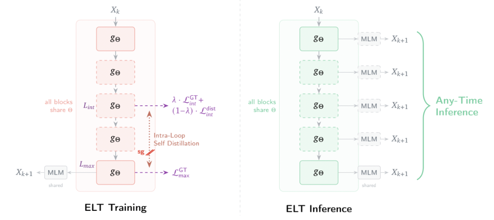
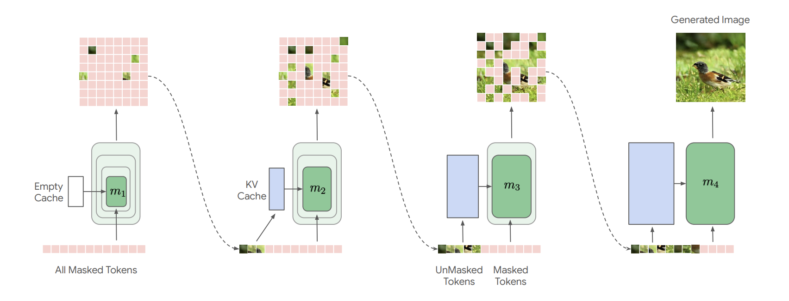
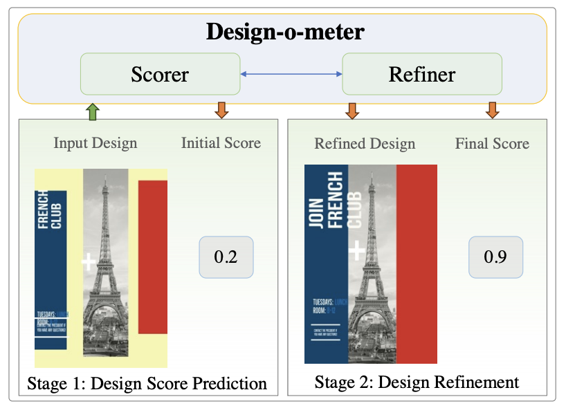
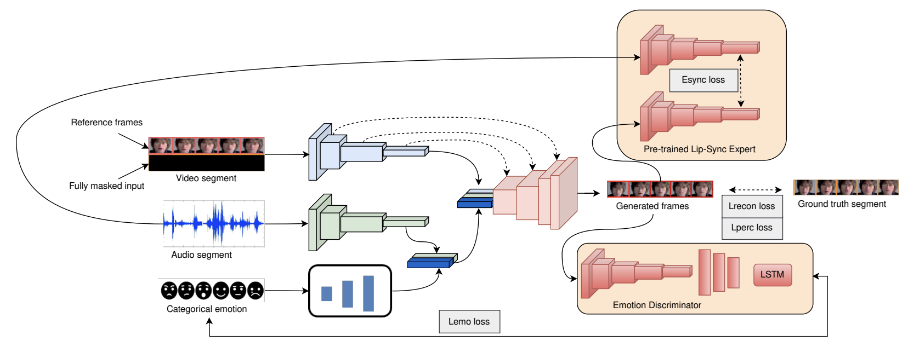
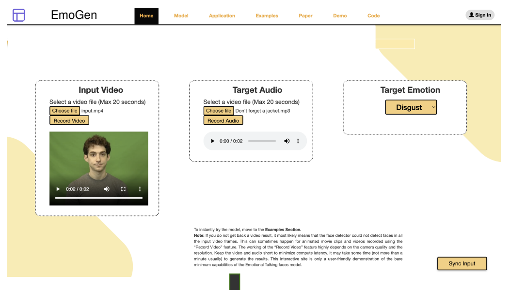

Research
I develop efficient and adaptive foundation models, with a focus on visual generation, decode-time scaling, and
multimodal systems.
Selected publications

ELT: Elastic Looped Transformers for Visual Generation
Sahil Goyal, Swayam Agrawal, Gautham Anil, Prateek Jain, Sujoy Paul, Aditya Kusupati
Elastic looped transformer architectures that adapt computation for efficient visual generation.
ECCV 2026
CVPR Workshop 2026

Masked Generative Nested Transformers with Decode Time Scaling
Sahil Goyal, Debapriya Tula, Prateek Jain, Sujoy Paul et al.
Nested masked generative transformers designed to benefit from additional computation at decode time.
ICML 2025
ICLR Workshop 2025

Design-o-meter: Towards Evaluating and Refining Graphic Designs
Sahil Goyal, Abhinav Mahajan, KJ Joseph et al.
A framework for evaluating and iteratively refining the aesthetic quality of graphic designs.
WACV 2025

Emotionally Enhanced Talking Face Generation
Sahil Goyal, Shagun Uppal, Sarthak Bhagat, et al.
Emotion-aware talking-face generation for more expressive and controllable video synthesis.
ICCV Workshop 2023
ACM MM Workshop 2023

Emotional Talking Faces: Making Videos More Expressive and Realistic
Sahil Goyal, Shagun Uppal, Sarthak Bhagat, et al.
A demonstration of expressive emotional control for realistic talking-face videos.
ACM MM Asia 2022
🏆 Best Demo Paper
Patent
US Patent · 2026
Efficient Visual Generation
US patent application covering methods for more efficient visual generation.
Reviewing service
Reviewer for NeurIPS, ICML, ICLR, CVPR,
ECCV, ICCV, AAMAS, and WACV.